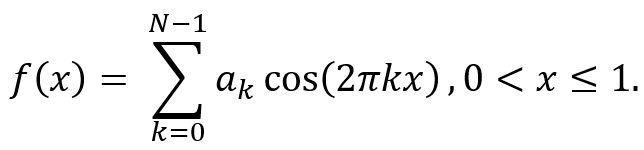
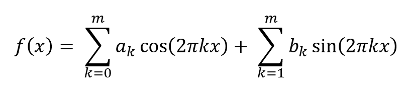

The Fast Fourier Transform (FFT) has become well known as a very efficient algorithm for calculating the Discrete Fourier Transform (DFT) of a sequence of N numbers. The DFT is used in many disciplines to obtain the spectrum or frequency content of a Signal, and to facilitate the computation of discrete convolution and correlation. Indeed, published work on the FFT algorithm as a means of calculating the FFT, by J. W. Cooley and J. W. Tukey in 1965, was a turning point in digital signal processing and in certain areas of numerical analysis. They showed that the FFT, which was previously thought to require N2 arithmetic operations, could be calculated by the new FFT algorithm using only N log(N) operations. This algorithm had a revolutionary effect on many digital processing methods and remains the most Widely used method of computing Fourier transforms. In their original paper, Cooley and Tukey referred only to I. J. Good's work published in 1958 as having influenced their development.
H. H. Goldstine in “A History of Numerical Analysis from the 16th Through the 19th Century” attributes to Carl Friedrich Gauss, the eminent German mathematician, an algorithm similar to the FFT for the computation of the coefficients of a finite Fourier series. Gauss' treatise describing the algorithm was not published in his lifetime, it appeared only in his collected works as an unpublished manuscript. The presumed year of the composition of this treatise is 1805, thereby suggesting that efficient algorithms for evaluating coefficients of Fourier series were developed at least a century earlier than had been thought previously. If this year is accurate, it predates Fourier's 1807 work on harmonic analysis.
On p. 249 of A History of Numerical Analysis from the 16th Through the 19th Century by Herman H. Goldstine, the following footnote appears:
❝ This fascinating work of Gauss was neglected and was rediscovered
by Cooley and Tukey in an Important paper in 1965.❞
This quotation refers to the treatise written by Gauss (1777-1855) entitled "Theoria Interpolationis Methodo Nova Tractata”; this was published posthumously in volume 3 of his collected works in 1866, but was originally written, most likely, in 1805. Goldstine gives on p. 249-253 an English translation of parts of Gauss' paper related to trigonometric interpolation algorithms, which are Articles 25-28 of the original latin text. Gauss wrote his important works and his personal mathematical diary in a nineteenth-century version of latin which is now called neo-latin. Another source of difficulty for the modern reader is the notation adopted by Gauss to describe his method. Gauss' method was also derived using real trigonometric functions rather than complex exponentials, making it more difficult to relate his method to current FFT techniques.
At this point, there are three questions to be addressed. Was the method used by Gauss a form of what is now called an FFT? Did Gauss realize he had developed a computationally efficient algorithm?
The analysis of a trigonometric series goes back at least to the work of Leonhard Euler (1707-1783). The stature of Euler in his own time meant that his work was read by his contemporaries, particularly the French mathematicians Clairaut, d'Alembert, and Lagrange. Alexis-Claude Clairaut (1713-1765) published in 1754 what we currently believe to be the earliest formula for the DFT, but it was restricted to a cosine-only finite Fourier series. Joseph louis Lagrange (1736-1813) published a DFT-like formula for sine-only series in 1762. Clairaut and Lagrange were concerned with orbital mechanics and the problem of determining the details of an orbit from a finite set of observations. Consequently, their data was periodic, and they used an interpolation approach to orbit determination: in modern terminology and notation, an even periodic function f(x) which has a period of one is represented as a finite trigonometric series by
The problem is to find the coefficients {ak} from the N values of f(x) for values of xn = n/N with n = 0, 1, ..., N - 1. Gauss knew of the works of Euler and Lagrange: he borrowed their works from the library at Göttingen while a student from 1795 to 1798.
Gauss extended this work on trigonometric interpolation to periodic functions, which are not necessarily odd or even. This was done while considering the problem of determining the orbit of certain asteroids from sample locations. These functions are expressed by a Fourier series of the form

where m = (N - 1)/2 for N odd, or m = N/2 for N even. Gauss showed in Articles 19-20 of his interpolation treatise that if one were given the values of f(xn), xn = n/N (n = 0,1, ... , N - 1), the coefficients ak and bk are given by the now well-known formulas for the DFT. This set of equations is the earliest explicit formula for the general DFT that we have found. Gauss develops his efficient algorithm by using N1 equally spaced samples over one period of the signal. This set of N1 samples is a subset of N total samples, where N = N1N2. Gauss computes the finite Fourier series which passes through these samples using m harmonics. He then assumes that another subset of N1 equally spaced samples of the signal are measured which are offset from the original set of samples by a fraction, 1/N2, of the original sample interval where N2 is a positive integer. A finite Fourier series with m harmonics is computed which passes through this new set of samples, and it is discovered that these coefficients are quite different from those computed for the original N1 samples. Gauss realized the problem and proceeded to develop a method for correcting the coefficients he had already calculated, and to determine additional coefficients for the higher-frequency harmonics. Using modern terminology, we would say that the waveform was undersampled, and that therefore the coefficients were in error because of aliasing of the higher-frequency harmonics. Gauss' solution to this problem was to measure a total of N2 sets of N1 equally spaced samples, which together form an overall set of N = N1N2 equally spaced samples. The finite Fourier series for the entire set of N samples is computed by first computing the coefficients for each of the N2 sets of length N1 all shifted relative to a common origin, and then computing coefficients of the N1 series of length N2 which are formed from the coefficients of corresponding terms in the N2 sets of coefficients originally computed. A final trigonometric identity is used to convert these coefficients into the finite Fourier series coefficients for the N samples.
Gauss did not, however, go on to quantify the computational requirements of his method to obtain the now familiar N ∑ Ni, or N log(N) expression for its computational complexity. From his short excerpt, Gauss clearly developed his procedure because it was computationally efficient and because it could be applied to a select, but interesting, set of sequence lengths. Thus, Gauss' algorithm is as general and powerful as the Cooley-Tukey common-factor algorithm and is, in fact, equivalent to a decimation-in-frequency algorithm adapted' to a real data sequence. The hints used by Gauss' biographers to establish a date for this work are summarized in the accompanying table. From these facts, we infer that Gauss wrote this treatise in October-November 1805. This work predates the 1807 work of Jean Baptiste Joseph Fourier (1768-1830) on representations of functions as infinite harmonic series. Fourier did not publish his results until 1822 because his presentation to the Academy of Sciences in Paris on December 21, 1807 was not well received by Lagrange and was refused publication in the Memoirs of the Academy. One of his earlier manuscripts dates back to 1804-1805 and includes research which he may have started as early as 1802. The DFT approach to solving the orbital mechanics problem was one of several. Approaches related to Newtonian mechanics gave alternative solutions to the problem, and, in the end, came to be preferred even by Gauss. Mathematicians concerned with orbital mechanics who read his posthumous treatise in 1866 would probably not have found the technique described therein of much interest. Thus, the dated nature of the publication, its publication in Latin, and the lack of notice of Goldstine's and Burkhardt'S work contributed to the "loss" of Gauss' FFT technique until now.
This investigation has demonstrated, once again, the virtuosity of Carl Friedrich Gauss. In addition, it has shown that certain problems can be timeless, but their solution rediscovered again and again. Burkhardt pointed out this algorithm in 1904 and Goldstine suggested the connection between Gauss and the FFT in 1977, but both of these went largely unnoticed, presumably because they were published in books dealing primarily with history. Almost one hundred years passed between the publication of Gauss' algorithm and the modern rediscovery of this approach by Cooley and Tukey.